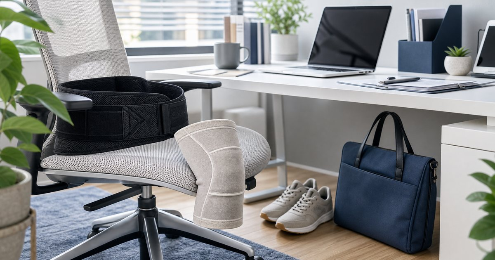

Elite Fashion｜久站久坐的膝蓋與腰背支撐：護膝、護腰與鞋包重量怎麼看
久坐或久站不一定先買最厚重的護具。先看支撐位置、尺寸、穿戴時間、鞋包重量與工作動線，才能把日常負擔降到可管理。

先找出負擔來源：站太久、坐太久，還是東西太重
同樣覺得膝蓋或腰背不舒服，原因可能完全不同：久站、久坐、通勤包太重、椅子高度不合，或一天內太少變換姿勢。先找負擔來源，才知道該看護具、包款，還是工作站調整。
可以把 BELEX、Jasper 大來護具、安里嚴選、Sports Support、Cool Sport Support 與 UD LAB 放在同一張清單裡，但不要把它們理解成同一種用途。編輯部會先看使用位置、尺寸、收納、清潔、是否需要家人協助，以及是否能被穩定放進日常。
比較穩妥的順序是先確認 不舒服出現的時間點、穿戴位置與每天背負重量。常見失誤是 一感到不適就直接買最強支撐，卻沒有檢查工作動線；在 門市服務、辦公室久坐、通勤與短距離出差 裡，先把動線與使用門檻整理好，比急著添購更多物件更實際。
- 先記錄一週中最容易不舒服的時段。
- 若已有明顯疼痛或受傷，應先諮詢專業人員。
護膝護腰要看尺寸，不是看厚度
護具選擇最容易被厚度誤導。看起來很有支撐感，不代表適合長時間穿戴；尺寸不合、包覆位置不對，反而可能讓人更不想用。
可以把 BELEX、Jasper 大來護具、Sports Support 與 Cool Sport Support 放在同一張清單裡，但不要把它們理解成同一種用途。編輯部會先看使用位置、尺寸、收納、清潔、是否需要家人協助，以及是否能被穩定放進日常。
比較穩妥的順序是先確認 尺寸標示、穿戴方式、是否適合工作服裝。常見失誤是 買了厚重護具，實際坐下或走路時覺得卡；在 久坐辦公、久站櫃位與通勤途中 裡，先把動線與使用門檻整理好，比急著添購更多物件更實際。
- 先量尺寸，再看支撐形式。
- 長時間使用前先從短時間試穿開始。
健身支撐用品要回到訓練習慣
護腕、腰帶或運動支撐配件不該被當成日常萬用答案。若是訓練使用，重點是動作、重量、頻率與教練建議；若是日常工作使用，則要看穿戴舒適度。
可以把 Sports Support、Cool Sport Support、BELEX 與 Jasper 大來護具 放在同一張清單裡，但不要把它們理解成同一種用途。編輯部會先看使用位置、尺寸、收納、清潔、是否需要家人協助，以及是否能被穩定放進日常。
比較穩妥的順序是先確認 使用場景是訓練、通勤還是工作，以及是否有人指導。常見失誤是 把健身配件直接拿來處理辦公室久坐問題；在 下班運動、重訓入門與週末活動 裡，先把動線與使用門檻整理好，比急著添購更多物件更實際。
- 訓練配件不等於日常護具。
- 不確定時先詢問教練或專業人員。
鞋包重量常常比護具更先影響日常
若每天背很重的包、穿不合腳的鞋或長時間站立，單靠支撐用品很難讓日常變輕。通勤包和鞋款重量也應放入檢查。
可以把 UD LAB、BELEX、Jasper 大來護具與安里嚴選 放在同一張清單裡，但不要把它們理解成同一種用途。編輯部會先看使用位置、尺寸、收納、清潔、是否需要家人協助，以及是否能被穩定放進日常。
比較穩妥的順序是先確認 包包重量、肩帶寬度、鞋底支撐與站立時間。常見失誤是 只買護具卻繼續背超重包包上下班；在 城市通勤、客戶拜訪與需要帶電腦移動的工作日 裡，先把動線與使用門檻整理好，比急著添購更多物件更實際。
- 先把包內物品減到必要。
- 肩背包、手提包與後背包要依行程輪替。
辦公室支撐用品要低調、好收、容易清潔
辦公室使用的支撐用品不一定要很醒目。能放抽屜、容易清潔、穿脫不尷尬，反而更容易被持續使用。
可以把 安里嚴選、BELEX、Jasper 大來護具與 UD LAB 放在同一張清單裡，但不要把它們理解成同一種用途。編輯部會先看使用位置、尺寸、收納、清潔、是否需要家人協助，以及是否能被穩定放進日常。
比較穩妥的順序是先確認 收納位置、清洗方式與是否會影響穿搭。常見失誤是 買了只適合居家的用品，辦公室根本不會拿出來；在 開放式辦公室、共享座位與商務穿搭 裡，先把動線與使用門檻整理好，比急著添購更多物件更實際。
- 能收進抽屜或包中的物件更適合工作日。
- 材質清潔方式要先看清楚。
一週調整法：先減重量，再看支撐，再改環境
比較務實的做法，是先做一週觀察：減少背包重量、調整坐姿與站立節奏，再決定是否需要護膝、護腰或其他支撐用品。
可以把 BELEX、Jasper 大來護具、安里嚴選、Sports Support、Cool Sport Support 與 UD LAB 放在同一張清單裡，但不要把它們理解成同一種用途。編輯部會先看使用位置、尺寸、收納、清潔、是否需要家人協助，以及是否能被穩定放進日常。
比較穩妥的順序是先確認 哪些調整不用購買就能先做，哪些需要用品輔助。常見失誤是 一開始就把所有用品買齊，卻不知道哪一件真的有效用；在 想把工作日負擔整理得更可控的日常 裡，先把動線與使用門檻整理好，比急著添購更多物件更實際。
- 先做低成本調整，再添購用品。
- 用品只是輔助，不取代專業建議。
FAQ
護膝或護腰可以長時間穿嗎？
需依個人狀況、尺寸與使用情境判斷。若有疼痛、受傷或長期不適，應先諮詢專業人員，不要自行依賴護具。
久坐族應該先買護腰嗎？
不一定。先檢查椅子高度、螢幕位置、休息節奏與背包重量，再判斷是否需要支撐用品。
運動支撐用品能拿來日常使用嗎？
有些可以短時間輔助，但訓練配件和日常護具的設計目的不同，建議依用途分開選。
下一步建議
如果你正在整理久坐久站的日常支撐，先從尺寸、穿戴時間與通勤重量三個條件開始。
重要警語
本文為一般日常支撐與工作動線整理，不構成醫療建議、治療承諾或個別產品測試。若有疼痛、受傷或長期不適，請諮詢合格專業人員。
本文含品牌／商品導購連結；若你透過部分商品連結前往選購，Elite Fashion 可能取得合作收益。本文仍以編輯判斷與使用情境整理為主，價格、規格、活動與庫存請以商品頁公告為準。